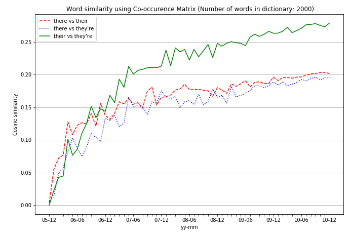

Word Semantics in Reddit Comments
Overview
I was interested in analyzing how the assumed semantic meaning of the words "they're, their, there"
has changed over the years. Specifically I was interested in if these words
have gotten more similar over the years. I based my analysis on co-occurrences
matrices of Reddit comments from the years 2005-2010. Constructing co-occurence matrices and plotting
the similarity between the words for each year in the range 2005-2010 gave the following result.

Each colored curve corresponds to the similarity between two pairs of words, chosen
from the three possible words "they're, their, there".
From the plot we can see that there is an upward trend, indicating an increase in the similarity of the words. The greatest increase can be seen for the words "their" and "they're". This result hints at that the confusion of these words have increased over the investigated interval.
If this seems interesting to you and if you wish to get a deeper explanation of the involved process and methods, please continue reading. The code can be found on github.
Introduction
As a non-native speaker of English, when trying to express myself in English I find that two errors can sometimes occur which can make it difficult for a reader to follow my line of thought:
- I commit a spelling error.
- I have misunderstood the semantic meaning of a word.
- there: In, at, or to that place or position.
- they're: Contraction of the words they and are.
- their: Belonging to or associated with the people or things previously mentioned or easily identified.
- I only investigate how the usage of the words have changed on the site . The comments from Reddit can easily be accessed here
- I restrict my attention to the usage between 2005-2010. (This is mainly due to the size of the stored comments for later years)
Method
Co-occurrence matrix
The first method I tried was that of similarity of co-occurence matrices. It was performed as follows.
- First we search through all comments to find where one of the three words is used. What we are interested in is to know how their assumed meaning has changed throughout the years and thus we need to specify a context for each word which contain the assumed meaning and which we can then compare. A context in this project was defined as a window of size 2 placed on each word occurence of the three given words. Examples of word context window of size 2 is given as follows:
... it is not what they intended. It is their dog after all. You should ...... given that he said this. I think there is a chance that he could ...... well I think that they're just mean. With that said, let us go ... - Thus one way to compare if the assumed semantic meaning of the word have gotten more similar is to see if the words in the context window has become more similar as well. Words that often appear in the context window of one of the words might be different than the words that appear in the context window of the other words, given that these words are used correctly. The word dog for example is unlikely to exist in the context window for the word they're while it is more likely to exist in the context window for the word their. Usually when working with long documents/context windows, one tends to remove or reduce the effect of common words (such as and, is, the) on the context. This is since for long documents these words are likely to appear but are not informative of the actual context, they only link the word and sentences together but does not give information of what the sentences describe. For short context windows, such as now when we are investigating a small window for individual words, these common words contain more information. The word is for example is a word that is likely to appear in the context window for their and there (such as in '.. is there tea left ..' or '... is their cat ok ...') but not as likely to appear in the context window for they're. Thus the word is can contain information on the assumed semantic meaning of the word.
- To convert this context window into a mathematical object, we create what is known as a co-occurence matrix. This is a matrix where each element gives the amount of occurences for each wordpair in the given context. For the sentence 'I have never seen a blue apple in this world. Blue apples does not exist. Look at this, this apple is green', we get the co-occurrence matrix as
 The matrix is obtained by splitting the previous sentence into all possible pairs and calculating the number of occurences of each pair (without taking the order of the words into account). Thus from the previous sentence about apples, we get the pairs: (I, have), (I, never), (I, seen), ..., (I, green), (have, never), (have, seen) etc.
The matrix is obtained by splitting the previous sentence into all possible pairs and calculating the number of occurences of each pair (without taking the order of the words into account). Thus from the previous sentence about apples, we get the pairs: (I, have), (I, never), (I, seen), ..., (I, green), (have, never), (have, seen) etc.
- We can thus see that from the co-occurrence matrix it is possible to infer that the sentence deals with topics related to Blue Apples and not Tokyo. The co-occurence matrix contains information of the content of the sentence. We will use technique to infer the assumed semantic meaning of the words they're, their and there. We do this by constructing a co-occurrence matrix for each context window placed on each occurrence of the three words in all of the available Reddit comments. The co-occurrence matrix will thus contain the content of the window, which we assume will represent the assumed semantic meaning of the given word. To get a total description of the assumed context, we sum all co-occurrences matrices individually for the three words. This gives us three final co-occurrences matrices, one for each of the three words, that we can use to infer the assumed semantic meaning. We do this separately for each month from 2005-12 until 2007-12 and then analyze how these matrices change as time progresses.
- To measure the similarity between the matrices we use the cosine-similarity on the matrices, defined as $$ \textrm{cosine-similarity}(A,B) = \frac{A \cdot B}{||A||||B||}$$ for matrices \(A\) and \(B\). This similarity measure is 1 if the matrices are identical (or a constant times the matrix) and 0 if the matrices are orthogonal (which in this setting means that they share no contexts with each other). Thus a larger value indicated a higher degree of similarity between the assumed semantic meaning of the words.
- Finally, to get an idea of the effect of the dictionary size on the result we calculate the similarities for dictionary sizes of 100, 500, 1000, 2000. The size of the dictionary is the number of possible words that are used to in the co-occurrence matrix, inclusion goes from most commonly occurring to least commonly occurring.
Future work
Due to this being a small project, this project was limited to the years 2005-2010. The main issue with scaling it up is the size of the comment files. The first few years are consist of a maximum of hundreds of megabytes, while the later years consist of tens of gigabytes It would be interesting to see the trend for a longer period. It would also be interesting to see the trends from other websites such as facebook.
Other similarity techniques could also be used to see if the conclusions drawn here are valid with other methods as well.